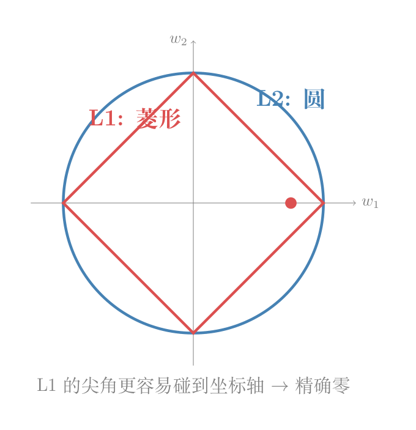

向量 $\mathbf{v} = [3, -4]$ 有多"大"？这取决于你是开车还是走路。
画面： 你在纽约曼哈顿。街道全是横平竖直的网格，不能斜穿街区。从 $(0,0)$ 到 $(3,-4)$，只能先往东开 3 条街，再往南开 4 条街。一共走了 7 个街区。
$$\|\mathbf{v}\|_1 = |3| + |-4| = 7$$

给你 5 个数据点，你可以用一条弯弯曲曲的高次曲线穿过每一个点——看起来完美，但系数巨大，两个点之间剧烈波动。你也可以用一条直线大致穿过——有误差，但系数小，曲线平滑。
附加 $\lambda\sum|x_i|$（L1）到拟合误差里，就等于告诉数学：「尽量用最少的系数」。附加 $\lambda\sum x_i^2$（L2）等于说：「系数都给我小一点」。两种都是让曲线变简单的方法。这一点是范数在优化中最核心的应用。
画面： 这次你不管什么街道了，直接坐直升机从起点飞到终点。这就是你脑子里那个"两点之间最短"的距离。
$$\|\mathbf{v}\|_2 = \sqrt{3^2 + (-4)^2} = \sqrt{9 + 16} = 5$$
import numpy as np
v = np.array([3, -4])
# L1：绝对值求和（出租车走过的街区数）
l1 = np.sum(np.abs(v))
print(f"L1 = {l1}") # 7
# L2：直线距离（直升机飞的）
l2 = np.linalg.norm(v)
print(f"L2 = {l2}") # 5.0画面： 想象你有一块方形的橡胶皮。你用两根手指扯住它的对角，往外拉。橡胶皮上的图案被扯变形了。
但有些方向只是被拉长，没有被扭曲。 如果你在橡胶皮上画了一个沿着对角线的箭头，拉完之后它还是沿着对角线的方向——只是变长了。这个方向就是特征方向。变长的倍数就是特征值。
用数学写：
$$A\mathbf{v} = \lambda \mathbf{v}$$$A$ 是变换（扯橡胶皮），$\mathbf{v}$ 是特征向量（不被扭的方向），$\lambda$ 是特征值（拉长了几倍）。
如果 $\lambda=2$：这个方向被拉长到原来的 2 倍。
如果 $\lambda=0.5$：被压扁到原来的一半。
如果 $\lambda=0$：被压成了一条线（那个方向的信息消失了）。
如果 $\lambda$ 是负数：不仅拉长，还翻转了方向。
A = np.array([[4, 1], [2, 3]])
# eig 返回两样：eigvals=特征值数组, eigvecs=特征向量（每列一个）
eigvals, eigvecs = np.linalg.eig(A)
print(f"特征值: {eigvals}") # 5 和 2
print(f"特征向量:\n{eigvecs}")
# 验证：A@v 应该 = λ×v
v1 = eigvecs[:, 0] # 第一个特征向量
l1 = eigvals[0] # 第一个特征值
print(f"A@v = {A @ v1}") # 应该 = λ×v
print(f"λ×v = {l1 * v1}")
print(f"相等? {np.allclose(A @ v1, l1 * v1)}") # True